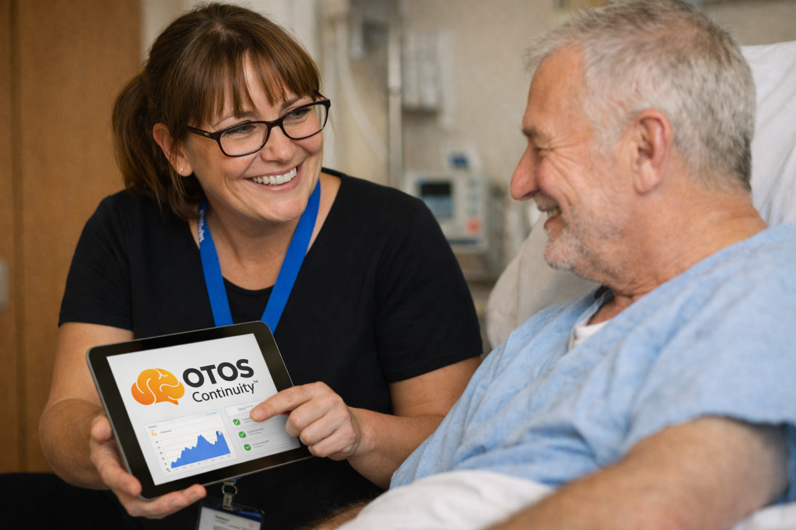

Scott pre‑meeting · 8‑slide elevator deck (single best output)
OTOS Continuity™ is infrastructure: a non-clinical continuity layer that runs between services.
Low disruption. No integration. Human decisions only.
OTOS exists because of what happened to me: I moved through rehab, A&E, CGL, CPFT and probation while the right condition stayed unresolved — and there was no real continuity holding me between services and the waiting list. I didn’t recover by waiting my turn; I recovered by navigating a fragmented system fast enough to reach the intervention that changed my life. OTOS was built from that gap: to make handoffs visible, drift visible and continuity real while the right intervention is still unresolved.
When ADHD is left waiting, addiction does not arrive quietly — it brings chaos with it.
“ADHD, when unsupported, is a potent route into … substance misuse … Economic costs … are avoidable as, when appropriately supported, individuals with ADHD can thrive.”
— NHS Independent ADHD Taskforce
A joined-up pathway, before crisis becomes consequence.
Earlier visibility. Better coordination. Fewer people lost between services.
What’s going wrong:
The issue is not the absence of services — it is what happens between them.
People are assessed, signposted, discharged or referred but the space between services is where people get lost and the thread of engagement breaks.
The cost shows up later in the worst places: A&E, detox, inpatient, policing, housing instability — and then it ripples outward into families, workplaces and communities, affecting everyone around the person.
I have direct relationships with all of the organisations shown, and each has been open to talking further (subject to governance and internal approvals).
OTOS is infrastructure, not another app.
OTOS Continuity™ is a non-clinical continuity infrastructure layer that makes follow-through visible between services.
What it does:
What it is not:
Nothing changes in how service providers work. What changes is what they can see.
OTOS surfaces signals. The partner teams make the decisions.
A 12-week pre-pilot demonstrator in Cambridgeshire and Peterborough for up to 50 adults with co-occurring ADHD and substance misuse.
Phase 1 starts with a single, governed use case: an ADHD continuity pathway for adults in addiction services who are diagnosed, suspected, waiting, or stuck between steps.
OTOS is not proposing to diagnose ADHD, and it is not asking keyworkers to become diagnosticians. It connects people to existing ADHD routes and support options (including early “holding” support via the RCE Hub), then keeps the whole-person journey visible across referral, RTC/QbTest-enabled assessment support (where governed by clinical leadership), medication review, handoff, and follow-through — so people actually reach what already exists, rather than being lost in the gap.
Pilot ambition (explicit): for a defined cohort of up to 50, we want people to progress through assessment and, where clinically indicated, onto treatment including medication, using existing routes (e.g., RTC/QbTest) under clinical leadership.
Waiting does not hold this cohort safely or cost-effectively.
This cohort often does not disengage loudly. It drifts silently between services. By the time risk becomes visible again, it is often visible as crisis.
Boundary (non-negotiable): OTOS remains non-clinical: it provides continuity and receipted follow-through so the handoff actually lands. Clinical responsibility stays with the clinical team.
Decision-grade evidence on feasibility and value:
If earlier continuity reduces relapse, re-presentation, and silent disengagement even marginally, the savings case becomes serious very quickly.
What I’m asking for in this pre‑meeting:
Close line: We are not asking the NHS to change — only to connect. OTOS runs between what already exists.
